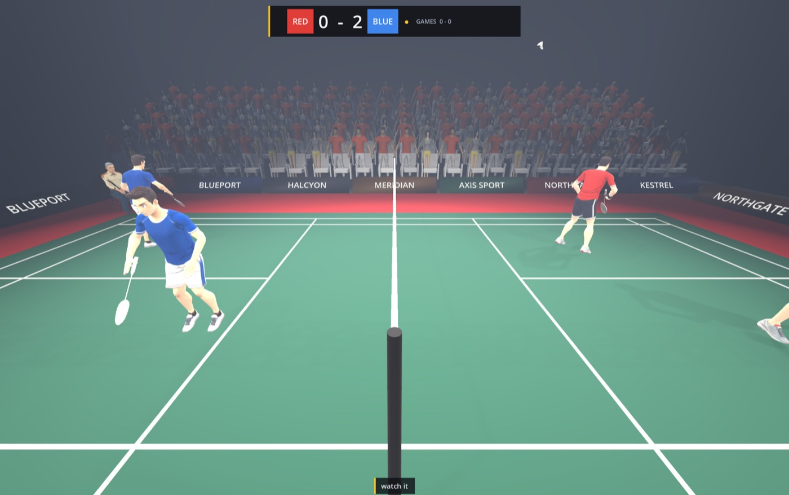
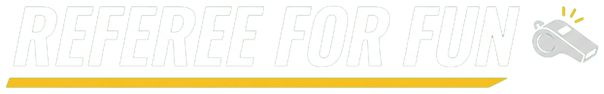
You are the umpire, not the athlete.
The ideaA role nobody plays
How it playsOne point, three beats
Full physics. The game knows exactly where it landed — to the millimetre.
Left click IN, right click OUT. Plus lets and faults.
Crowd, players, coaches. The game never tells you if you got away with it.
The game knows the truth.
It is never going to tell you.
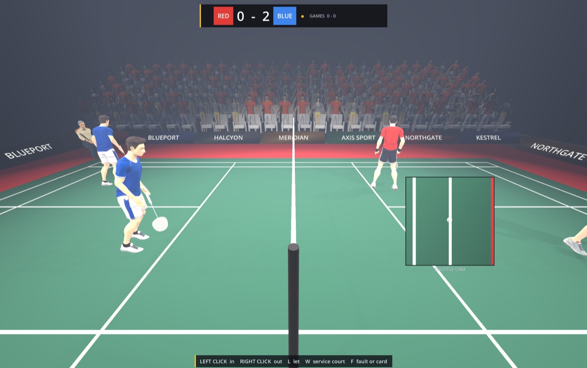
The temptationWhy you'd lie
No bribes. Nobody ever asks.
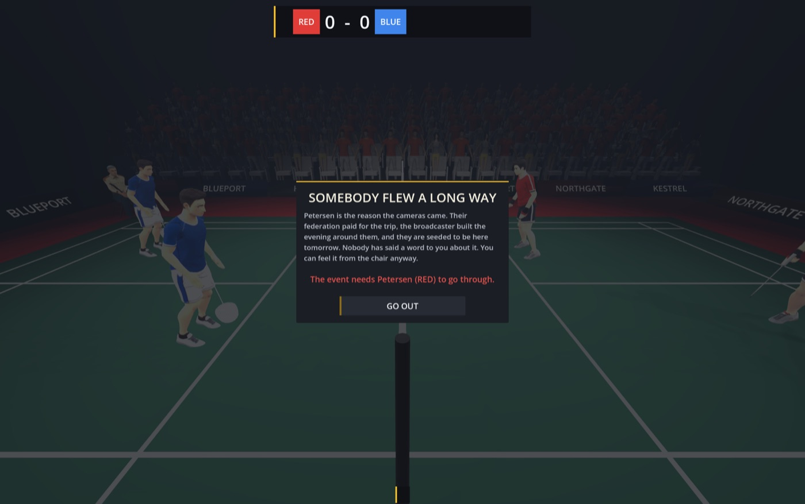
Before the match: nobody says a word. You can feel it anyway.
The pushbackHow you get caught
Being wrong is fine. Being wrong for the same side every time is not.
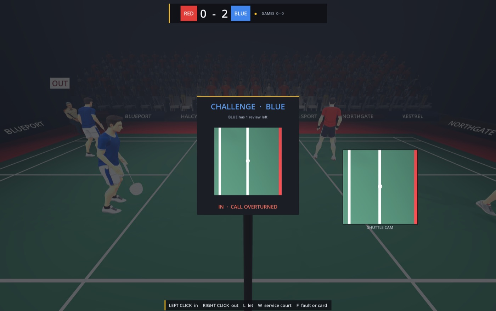
Hawk-Eye: the one moment the truth goes public.
Six sportsOne official · one reputation
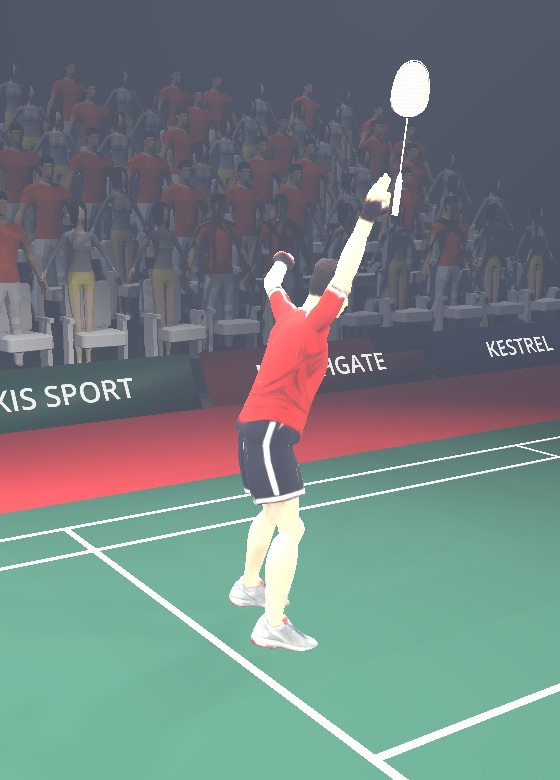
Was it in? Line judges disagree.
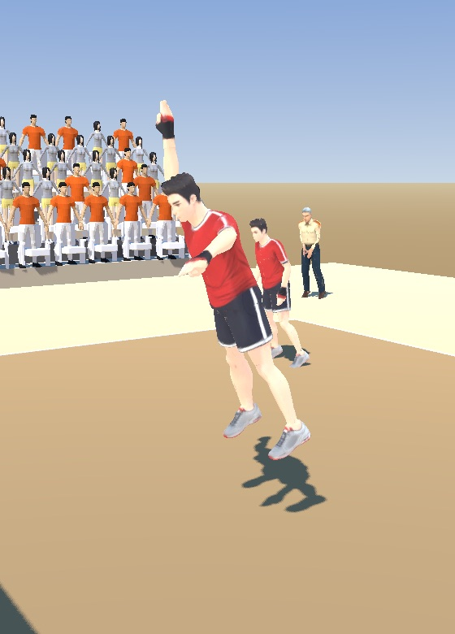
Did it touch a finger on the block?
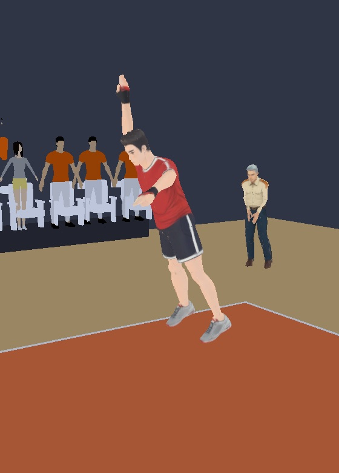
Is the rotation right before the serve?
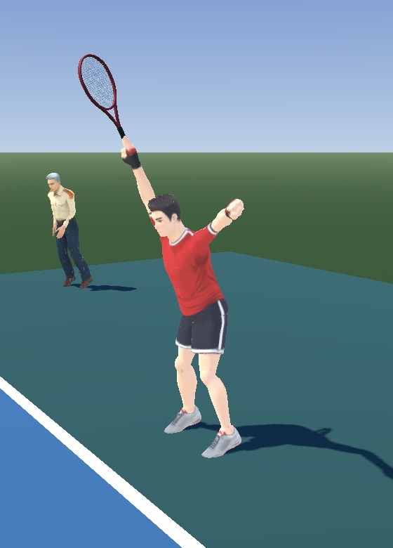
First serve, second serve, match point.
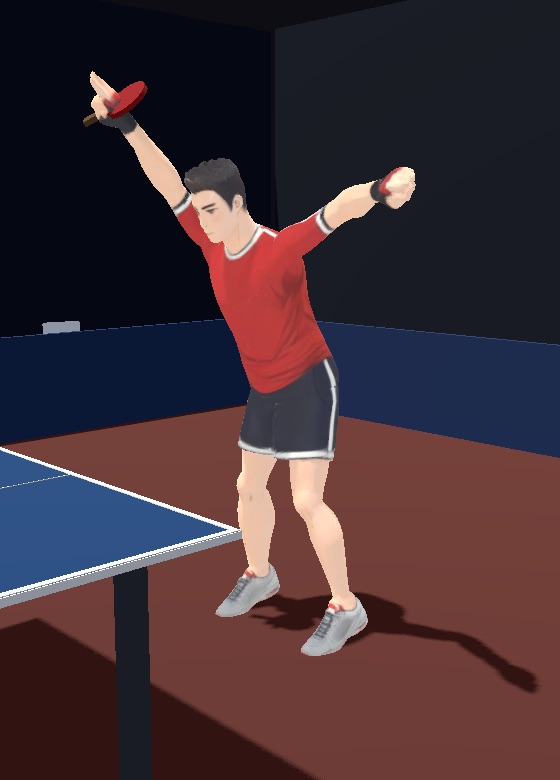
No line judges. Only you.
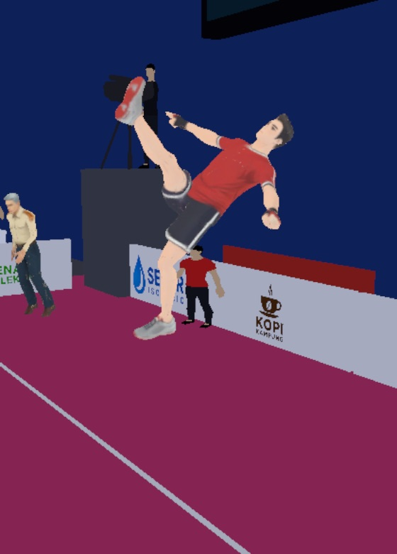
Is the foot in the circle for the serve?
CareerFive venues per sport
Nobody much watching.
Somebody is keeping score.
Long enough for a pattern to show.
Hawk-Eye, and a crowd that can turn.
Every call gets looked at again.
Where it standsPlayable today
sports on one shared engine, each with its own rules
career venues per sport, school hall to international
badminton rallies land within 25 cm of a line, so close calls happen all the time
platforms built: macOS and Windows
Take the chair.
Questions? Take the chair and try it.
referee-for-fun.netlify.app